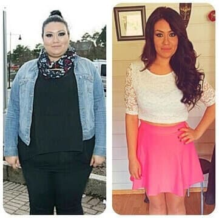
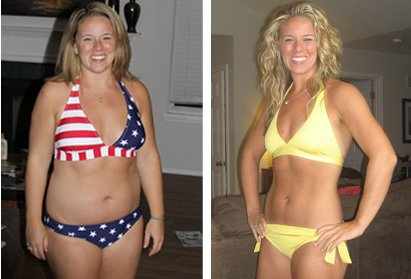
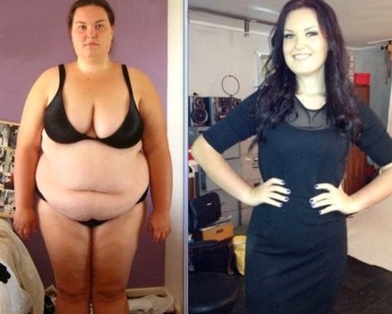

Здравейте, момичета! Всички забелязаха, че съм отслабнала толкова много и започнаха да ме бомбардират с въпроси . Опитах се да отговоря на всички и да ви подкрепя, но не успях - с толкова много съобщения, на които трябваше да отговоря, щеше да ми се наложи да живея онлайн. И така, реших да напиша този пост, за да отговоря на следния въпрос: "Как успя да свалиш 31 кг?" (Това не означава, че не можете да ми пишете или да ме попитате нещо, просто по този начин ще улесня живота си).
Трансформацията ми отне само ДВА МЕСЕЦА! СТРАХОТЕН РЕЗУЛТАТ, НАЛИ?

Никога не съм била кльощава, но забелязах, че продължавам да качвам все повече и повече килограми. Три ужасни гънки се появиха на корема ми, приличах на булдог по бикини, а бедрата, краката и дупето ми ставаха все по-големи и по-големи! Реших по всякакъв начин да се сдобия с добре оформено и здраво тяло , така че спрях да ям мазна и пържена храна и престанах да се храня късно вечер. Започнах да излизам на сутрешен джогинг и да ходя на фитнес всяка вечер, но вместо да отслабна, продължих да качвам все повече и повече килограми! Месец по-късно теглото ми достигна до ужасяваща отметка - ПОЧТИ 100 кг! Продължих да спазвам по-строга диета, изключих от своето ежедневно меню месото, хляба, пържените картофки и сладкишите. В крайна сметка ядох само плодове и зеленчуци и пиех само вода. Опитах някои ужасно скъпи чайове и хапчета за отслабване, но като че ли нищо не ми помагаше . След известно време загубеното тегло се върна към изтощеното ми тяло.
Нито диетите, нито хапчетата ми помогнаха, те са просто измама!
Тренировките са твърде сложни и
отнемат твърде много време, за да се види някакъв напредък. И така, какво да правя по-нататък??
След купища диети, хапчета и часове във фитнеса и хиляди пари, платени на личния ми инструктор, се отказах напълно. Един ден попаднах на статия за и реших да я опитам. Въпреки че бях чула, че Деми Мур, Кейти Пери, J-Lo и много други знаменитости са отслабнали с тази добавка, бях скептично настроена. Но вече бях опитала всичко друго и бях отчаяна, нямах избор, освен това проверих отзивите и те наистина бяха впечатляващи!
Милиони жени в Европа и САЩ се отърваха от излишните си килограми благодарение на . Според изследването 96,7% отслабнали с 12-17 кг за три седмици!

И така, реших! Преминах към техния уебсайт , проверих два пъти всичко и поръчах добавката за отслабване. Пристигна в рамките на няколко седмици. Прочетох инструкциите и започнах да пия добавката веднъж дневно, на закуска.
Резултати
Само след две седмици резултатите ми бяха зашеметяващи - свалих 6 кг! Подпухналостта изчезна, а цветът на кожата ми се подобри! Бедрата и коремът ми станаха забележимо по-слаби - и настроението ми се подобри! Започнах да вярвам, че отново мога да съм красива без никакви диети или упражнения! Така, продължих да ям всичко, което си искам ! Бях твърде болна и уморена да гладувам и да тренирам...
До края на третата седмица свалих още 12 кг! Станах по-слаба и това ме вдъхнови да изкачвам стълбите, вместо да използвам асансьор всеки път. Това, което изглеждаше трудна тренировка, стана лесно удоволствие за мен! Не можех да повярвам, че това се случи само защото следвах онези прости инструкции върху опаковката от добавката! Щом аз успях да го направя - всеки може! Изминаха само два месеца, а моите 31 кг се стопиха!
Достигнах желаното тегло за 60 дни. Коремът ми се стопи, свалих 31 кг и получих тяло, за което никога не смеех да мечтая !
Между другото, е тествана от Българската академия на науките през 2014 г. Резултатите биха били бомба, но те никога не станаха публично достояние. Смятам, че това е така, защото резултатите биха съсипали фармацевтичните компании, фитнес клубове, диетолози и скъпи клиники! Нищо чудно: е нелепо евтина!
Сега продължавам да препоръчвам на моите приятелки и колежки. Важно: поръчвайте от официалния уебсайт на продукта, в противен случай може да получите фалшификат. Доволна съм от резултатите си и вярвам, че и вие ще бъдете щастливи! Забравете за стереотипите: нямате нужда от диети и тренировки, за да имате хубава фигура!
P.S. Всички, които са отслабнали само с помощта на добавката , не се колебайте да споделите резултатите си точно тук! Това ще помогне на останалите хора да се убедят, че тя наистина помага! Ура!
Хей, момичета! Получих страхотни новини! Представителите на компанията се свързаха с мен, за да предложа 50% отстъпка на първите 100 посетители на моя блог, които направят поръчка тук!
коментари
Скъпа Милена, благодаря ти, че ме вдъхнови най-накрая да се отърва от тези ужасни килограми! Минаха три седмици и отслабнах с 28 кг. Теглото ми вече е 57 кг и както обеща, не се колебае. С най-добри пожелания, Ралица.
Отдавна мечтая за стройна фигура, прочетох за на тази страница преди три месеца. Колебаех се дали да си я поръчам, но майка ми ме убеди. Това не е висока цена за сбъдната мечта! Сега заедно отслабваме. Въпреки това, тя се справя по-добре от мен = (
Толкова съм щастлива, че намерих този блог. Със сигурност ще опитам тази добавка за остлабване ! Благодаря
Ей Милена! Последвах съвета ти и опитах и супер ... ти всъщност спаси семейството и брака ми =) Милена, ти си невероятно момиче! Съпругът ми се промени много към мен напоследък, придобих самочувствие ... Сега се чувствам СТРАХОТНО! =)
Здравейте дами, скоро ще стана част от отбора на стройните!! Току-що получих своята добавка ! Благодаря, че споделихте резултатите си и ме мотивирахте да започна курса. Дано най-накрая да се отърва от всички мазнини. Ще пиша тук за моя напредък xoxo
Здравей, Ваня! Много се радвам за теб! Най-важна е хармонията вътре в нас, но това е невъзможно без хармонията със собственото ни тяло. Очаквам с нетърпение първият ти напредък. И не забравяй: по-добре е да постигнеш малък напредък отколкото никакъв! Късмет!
Скъпа Милена! Много се радвам, че намерих твоя уебсайт и бих искала да получа някаква подкрепа тук. Опитвала съм много методи за отслабване, но за съжаление резултатите не оправдаха моите очаквания. Висока съм 158 см, тежа 97 кг - това е срамота!!! Трябва да сваля поне 36 кг и изглежда е последната ми надежда за решение….
Здравей, Криси! Аз не съм единствената, която е станала стройна с помощта на тази добавка ! Приятелките ми също я изпробваха и ТЯ РАБОТИ, така че ти давам 100% гаранция, че няма да останеш разочарована отново. Всички сме доволни от нашите резултати и ти пожелавам същото!
Дами, искам да ви помоля още веднъж, да отделите няколко минути, за да споделите вашите резултати, защото споделянето е проява на грижа! Това може да е вашето послание, което убеждава някой друг най-накрая да стане строен, красив и наистина щастлив!
Получих я вчера и днес започвам нов живот! Нямам търпение да видя първия напредък)
Скъпа Милена! Много ти благодаря! Отслабнах много бързо, но по-важното е, че килограмите не се връщат както преди! Това е чудо! Препоръчвам добавката на моите момичета, защото не мога да ги гледам да гладуват до смърт.
Утре имам среща и ще ходим да обядваме на някое изискано място. Преди няколко седмици само мисълта да отида там и да ям храна, без да знам колко калории съдържа, беше истински кошмар за мен. Сега не ме интересува! Знам, че мога да ям каквото си поискам и повече няма да напълнея. Отслабнах с 27,5 кг с помощта на само след месец! Благодаря ти, Милена Стефанова!
Леле, Красимира, наистина ли постигна такъв резултат само след месец? Може би и аз трябва да си взема ... качих още три кг, това е ужасно...
Свалих 18 кг за 6 седмици!!! Просто невероятно! Благодаря ти, Милена Стефанова!!!!
Честито, Ани! Резултатът ти е изключителен! Сега нямам никакви съмнения относно !!!
Както обещах, споделям моите резултати. Системата е отлична. Успях да сваля почти 15 кг за 6 седмици. ЕХА!
Забравете за всички съмнения, тази добавка наистина работи! Една приятелка също отслабна с - около 18 кг за 2 месеца, ако не се лъжа. Впечатляващо, а?
Благодаря ви за отзивите, дами! Мотивирахте ме да поръчам и да действам, за да подобря фигурата си! Вече отслабнах с 5 кг, само с 6 повече от желаното ми тегло!
Трите ми братовчедки се промениха напълно след като пиха тази добавка в продължение на няколко месеца. Превърнаха се от типични момичета "плюс сайз" в зашеметяващи красиви дами!
И така, ето моите резултати: отслабнах с 12,5 кг без нито едно посещение на фитнес залата! Всички хора са толкова шокирани от това =))
Здравей, Любомира! Много се радвам за теб! Но доколкото си спомням, ти искаше да свалиш още малко. Това е чудесно начало! Продължавай! Успех!
Здравей, Милена! Прочетох поста ти и реших да поръчам . Скоро ще се срещна с моите приятели от гимназията, дълго време не сме се виждали и щеше да е голям срам, ако бях се появила, тежейки 115 (!!!!) кг и носейки размер XXL !!! Бях толкова кльощава на 17-години... Сега тежа 68 кг и си купих рокля размер М за срещата. Все още има какво да подобря, но наистина съм ти благодарна, че ме мотивира да започна! Ура!
Постиженията ти са направо зашеметяващи... но нали разбрах правилно, че няма нужда да спазвам никаква диета? Гадими се от самата мисъл да продължа с друга нисковъглехидратна диета или тем подобни... без повече глад, моля!
Петя, да, правилно си разбрала. изобщо не изисква от вас да спазвате някаква диета. Всички знаем, че щом спрем да спазваме някаква диета, теглото се връща - това никога няма да се случи, ако пием . Така че не се притеснявай, просто я опитай и ще видиш!
Не мога да не споделя моите резултати!!! Отслабнах с 20 кг за два месеца!!!!! Тази добавка е истинско съкровище ! Със съпругът ми сме на втори меден месец)))
Започнах да пия тази добавка преди 2 месеца и вече свалих 23 кг! Срам ме е да кажа, че преди тежах 90 кг и се чувствах твърде неудобно да отида на плаж по време на почивка...
Наистина трябва да сваля 14 кг колкото е възможно по-бързо... попаднах на този уебсайт и бях очарована от всички коментари на момичетата и резултатите... Определено ще дам на тази добавка шанс и ще видя какво ще стане) пожелайте ми късмет!
Сестра ми ми купи няколко опаковки от от Япония миналата година. Първо мислех, че е нелепо - как човек може да отслабне без диети и тренировки - но тя ме убеди просто да опитам... Никога не съм мислила, че това е възможно... Започнах да пия добавката през февруари и през май ТРЯБВАШЕ ДА СМЕНЯ ЦЕЛИЯ СИ ГАРДЕРОБ! Всичко ми беше просто твърде голямо!!! Преминах от 92 до 58 кг за по-малко от два месеца!!!!!! Оттогава изминаха 2 години, но теглото ми не се е променило! Сега съм щастливо момиче. За да направите извод, просто опитайте тази добавка за няколко седмици... и ще видите...
Леле, Диди, резултатите ти са впечатляващи! Скъпи дами, искам да се извиня, че не успях да отговоря на всички, но постоянно проверявам пощата си и искам да кажа, че съм щастлива и се гордея с вас и вашите постижения!
Толкова отдавна бе това, че сега ми е забавно да си спомням, че някога съм тежала 79 кг ... Сега теглото ми е 54 кг и независимо от това какво правя или ям, то не се променя! Гордея се с моите снимки на напредъка заедно с вас:
Скъпи Милена и всички момичета, които оставиха коментар тук! Нямам думи, за да изразя своята благодарност и щастие... На 33 години съм и през последните няколко години преживях ад, заради теглото си. Дори и най-лесната тренировка беше истинско предизвикателство за мен, изпитвах ужасни болки в гърба, бързо се изтощавах и изморявах... Прочетох вашите отзиви и реших да опитам - и резултатите надхвърлиха моите очаквания! Сега тежа 63 кг - преди бях 91 кг! Отслабнах с 28 кг за три месеца! Чувствам се страхотно, чувствам се и изглеждам с 10 години по-млада! Нямам задух и гърба ми не ме боли повече!
Пиех някакъв японски чай за отслабване и наистина ми помогна да сваля 2 кг, но чак след 2 седмици ((Моля, кажете ми, дали ще е същата история и с ?
Здравей, Анита. Не се притеснявай, това няма да се случи. Просто погледни снимките на всички тези красиви жени и мен - бързо отслабнахме и не сме качили нито един килограм оттогава! Екстрактът от зелен чай Матча наистина работи и помага на тялото да поеме контрол върху мазнините, които получава. Трябва да опиташ дори за една седмица и веднага ще забележиш ефекта!